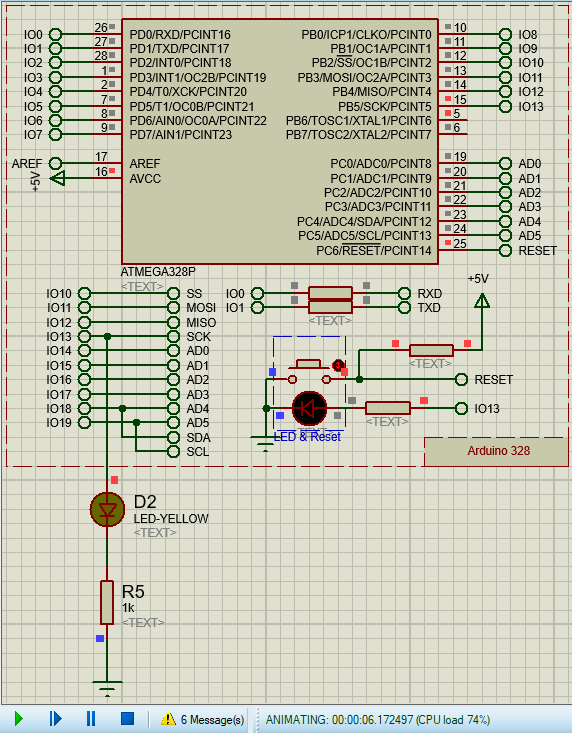
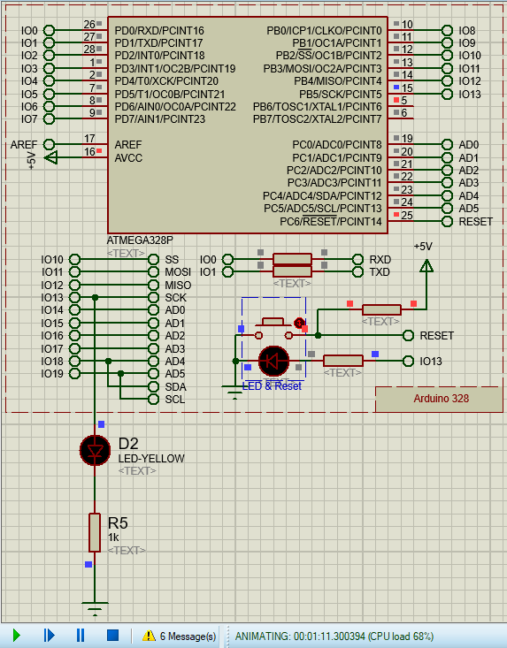

| نام: آزمایش 00: راهاندازیهای اولیه و تست ماژولهای آردوینو |
زاده: |
| درگذشت: |
جنسیت: زن |
| ملیت: |
محل تحصیل: |
| شناختهشده برای: |
جایزهها: |
| برچسبها: |
|
برای کسب اطلاعات درباره ریزپردازنده، ریزمهارگر، بردهای توسعه به پیوست 1 مراجعه کنید.
برای درک و انجام این آزمایش پیوست 2 (مروری بر اصول و اسلوب برنامهنویسی) و پیوست 3 (آموزش کار با نرمافزارهای مورد نیاز) را باید بخوانید.
کد کامل این آزمایش و آزمایشهای دیگر نیز همگی در پیوست 4 آمدهاند (البته کد این آزمایش استثنائا از طریق کنش «Blink» زیرمنوی «01.Basics» در «مثالها (Examples)» در منوی «پرونده (File)» در نرمافزار Arduino IDE نیز در دسترس است). در ادامه، کد این آزمایش به صورت تکه تکه توضیح داده خواهد شد.
همانگونه که در پیوست 2 (مروری بر اصول و اسلوب برنامهنویسی) گفته شد، برای راحتی و سرعت در خوانش و فهم کدهای از پیش نوشتهشده، بهتر است که از نظرات توضیحی ابتدای پروندههای کد منبع (که درباره چیستی و چرایی وجود آن پرونده، نویسنده یا نویسندگان آن و مجوزهای استفاده و انتشار توضیح میدهند و معمولا برای فهم آن کد ضروری نیستند) و تعریف متغیرهای جهانی و توابع دیگر گذر کنیم و مستقیما به جایی که اجرای کد ما از آنها آغاز میشود برویم؛ یعنی تابع «راهاندازی آغازین (setup)» و پس از آن هم تابع «حلقه اصلی (loop)». شایان ذکر است که برای اطلاعات بیشتر درباره موارد استفادهشده در کد (توابع «pinMode»، «digitalWrite» و «delay» و ثابتهای «LED_BUILTIN»، «OUTPUT»، «HIGH» و «LOW») میتوانید به پیوست 6 مراجعه کنید.
تکه کد مربوط به تابع راهاندازی آغازین در ادامه آورده شده است:
اگر باز هم در اینجا از نظرات صرف نظر کنیم، کد این تابع عملا دو خط است، در خط یکم آن (خط دوم کد)، تابعی بدون خروجی (از نوع «void») به نام «setup» اعلان و مقداردهی اولیه شده که بلوک حکمهای آن تنها دربردارنده یک حکم میشود، فراخوانی تابع «pinMode» با مقادیر ثابتهای «LED_BUILTIN» و «OUTPUT» بهترتیب بهعنوان آرگومانهای یکم و دوم آن.
تابع «pinMode» پین مورد نظر را در قالب یک عدد صحیح بیعلامت 8 بیتی (نوع «unsigned char») بهعنوان آرگومان یکم (ثابت «LED_BUILTIN» با مقدار «13» در صورت گزینش برد توسعه «آردوینو اونو (Arduino Uno)» و «آردوینو مگا (Arduino Mega)» در زیرمنوی «برد (Board)» در منوی «ابزارها (Tools)» در بخش منوهای نرمافزار Arduino IDE، این مقدار میتواند در صورت گزینش بردهای دیگر تغییر کند) و حالت مطلوب را باز هم در قالب یک عدد صحیح بیعلامت 8 بیتی (نوع «unsigned char») بهعنوان آرگومان دوم (ثابت «OUTPUT» با مقدار «0x01») میگیرد و حالت دادهشده را روی پین مورد نظر اعمال میکند.
تکه کد مربوط به تابع حلقه اصلی نیز در ادامه آورده شده است:
در اینجا هم تابعی بدون خروجی (از نوع «void») به نام «loop» در خط 2 (خط 8 کد) اعلان و مقداردهی اولیه شده که بلوک حکمهای آن دربردارنده 4 حکم است، فراخوانی تابع «digitalWrite»، سپس فراخوانی تابع «delay» و دوباره همین روال ولی آرگومان دوم فراخوانی تابع «digitalWrite» این بار تغییر کرده است.
تابع «digitalWrite» پین مورد نظر را بهعنوان آرگومان یکم و حالت منطقی (دیجیتال) مطلوب را بهعنوان آرگومان دوم خود میگیرد و حالت منطقی مطلوب را روی پین مورد نظر اعمال میکند.
تابع «delay» یک مقدار عدد صحیح بیعلامت طولانی (نوع «unsigned long») بهعنوان تنها آرگومان خود میگیرد و ریزمهارگر را برای همان مقدار زمان (به واحد میلی ثانیه) معطل میکند، به عبارت دیگر ریزمهارگر از زمان فراخوانی این تابع تا پایان مدت زمان تعیینشده هیچ کاری انجام نمیدهد.
در اینجا ابتدا با استفاده از تابع «digitalWrite»، پین «LED_BUILTIN» در حالت «HIGH» («یک» منطقی/5 ولت) قرار گرفته و سپس با استفاده از تابع «delay» به اندازه 1000 میلی ثانیه (1 ثانیه) صبر شده (یعنی LED روی برد توسعه روشن شده و برای ۱ ثانیه همچنان روشن نگه داشته شده)، سپس دوباره با استفاده از تابع «digitalWrite»، پین «LED_BUILTIN» این بار در حالت «LOW» («صفر» منطقی/0 ولت) قرار گرفته و سپس با استفاده از تابع «delay» به اندازه 1000 میلی ثانیه (1 ثانیه) صبر شده است (یعنی LED روی برد توسعه خاموش شده و برای 1 ثانیه همچنان خاموش نگه داشته شده). به این ترتیب، با هر بار تکرار این حلقه، LED روی برد توسعه 1 ثانیه روشن و 1 ثانیه خاموش میشود و به این شکل، یک مدار چشمکزن ایجاد میشود.
شبیهسازی این آزمایش پیچیدگی و نکته خاصی ندارد، صرفا باید در نظر داشته باشید که همانگونه که در بخش «نرمافزار Proteus» پیوست 3 هم ذکر شد، به علت یک باگ برنامهنویسی در این نرمافزار، LED درون قطعه مرکب آردوینو با وجود سرخ شدن رنگ مربع دیجیتال سر شاخه مربوطه، چشمک نمیزند و برای دیدن چشمکزدن LED، باید حتما یک مدار جداگانه LED بههمراه مقاومت محدودکننده جریان را بهصورت دستی به پایه 13 قطعه مرکب آردوینو وصل کنید، مانند تصویرهای زیر:


این آزمایش، استثنائا نیازی به بستن مدار اختصاصی برای کار کردن ندارد و بلافاصله پس از بارگذاری کد آزمایش بر روی برد توسعه مورد نظر، کد شروع به اجرا خواهد کرد.
اما در صورت تمایل برای بستن مدار اختصاصی جداگانه برای آزمایش، میتوانید برد را از رایانه جدا کرده و توسط جک بشکهای مادگی روی آن، به یک منبع تغذیه ۱۲ ولتی وصل کنید تا برد توسعه تغذیه شده و کد آزمایش را اجرا کند. همچنین میتوانید تابلوی آردوینوی مورد نظر را به برق وصل کرده و روشن کنید، سپس یک سیم بردارید و یک سر آن را زیر ترمینال «زمین (GND) » منبع تغذیه پیچ کرده و سر دیگر آن را به یکی از سه پین هدر مادگی «زمین (GND) » روی برد آردوینو (هم در آدروینو اونو و هم در آردوینو مگا، یک پین هدر مادگی «زمین (GND)» در انتهای بخش «دیجیتال (Digital)» و دو پین هدر مادگی «زمین (GND)» در بخش «قدرت (Power) » دارند) وصل کنید (البته توصیه میشود که در صورت امکان، هر سه پین هدر مادگی را به «زمین (GND) » منبع تغذیه وصل کنید). یک سیم دیگر هم بردارید و یک سر آن را زیر ترمینال «۵ ولت (5 V) » منبع تغذیه پیچ کرده و سر دیگر آن را به پین هدر مادگی «۵ ولت (5V)» در بخش «قدرت (Power) » روی برد آردوینو وصل کنید. در این صورت هم، برد توسعه دوباره تغذیه شده و کد آزمایش را اجرا میکند.مراحل این آزمایش در ادامه آمدهاند.
برای شبیهسازی مدار در نرمافزار Proteus، بر پایه مطالب گفتهشده در بخش «نرمافزار Proteus» پیوست ۳ عمل کنید.
پیادهسازی عملی مدار خود دربردارنده دو زیربخش است که در ادامه توضیح داده میشوند.
برای ترجمه و بارگذاری کد آزمایش، مانند آزمایش ۰ عمل کنید.
برای بستن مدار، بر پایه مطالب گفتهشده در زیربخش «توضیح سیمبندی و بستن مدار آزمایش» در بخش «پیشنیازها» عمل کنید.